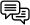

Premios Nobel de literatura
-
ORDENADOS POR EL IDIOMA DE SU PRODUCCIÓN LITERARIA

Ingles- 2013: Alice Munro
- 2016: Bob Dylan
- 2017: Kazuo Ishiguro
- 2020: Louise Glück
- 2021: Abdulrazak Gurnah
- Francés
- 2014: Patrick Modiano
- 2022: Annie Ernaux
- Ruso
- 2015: Svetlana Aleksievich
- Polaco
- 2018: Olga Tokarczuk
- Alemán
- 2019: Peter Handke
Consultado en All Nobel Prizes in Literature